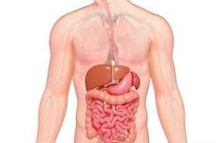

पाचन तन्त्र

पाचन तन्त्र मानव शरीर से संबंधित उल्लेख है। भोजन का अन्तर्ग्रहण, पाचन, अवशोषण, मल त्याग आदि क्रियाएँ पाचन तन्त्र के द्वारा सम्पन्न होती हैं। आहारनाल तथा उससे सम्बन्धित पाचन ग्रन्थियाँ सम्मिलित रूप से पाचन तन्त्र बनाती हैं।
आहारनाल
मनुष्य में 8 से 10 मीटर लम्बी आहारनाल पाई जाती है। जो मुख से मल द्वार तक फैली रहती हैं इसकी भित्ति मुख्यतः अरेखित पेशियों से बनी होती है। आहारनाल में निम्नलिखित अंग होते हैं-
- मुख:- मुख एक अनुप्रस्थ काट के रूप में होता है तथा दो माँसल होंठों से घिरा रहता है तथा मुखग्रासन गुहिका में खुलता है। दोनों होठ मुख को खोलने और बन्द करने के अतिरिक्त भोजन को पकड़ने तथा बोलने में सहायक होते हैं। मनुष्य की मुख ग्रासन गुहिका सदैव लार नामक तरल से नम बनी रहती है। मुख को दो प्रमुख भागों में विभेदित रहती है- जिह्वा और दाँत।
- ग्रसनी:- ग्रसनी मुखग्रासन गुहिका का पिछला छोटा भाग होता है। इसके पृष्ठ भाग को नासाग्रसनी तथा आहार भाग को मुखग्रसनी कहते हैं।
- ग्रासनली:- ग्रासनली लगभग 25 सेमी लम्बी एवं सँकरी पेशीय नली होती है। यह ग्रीवा तथा वक्षस्थल में होती हुई डायफ्रॉम को बेधकर उदरगुहा में प्रवेश करती है।
- आमाशय:- आमाशय उदरगुहा में बाईं ओर डायफ्रॉम के ठीक पीछे स्थित होता है। यह आहारनाल का सबसे अधिक चौड़ा तथा पेशीय भाग होता है।
- आन्त्र:- आहारनाल का शेष भाग आन्त्र या आँत कहलाता है। इसकी लम्बाई 7.5 मीटर होती है और दो प्रमुख भागों में विभेदित रहती है- छोटी आन्त्र या बड़ी आन्त्र।
- छोटी आन्त्र
- बड़ी आन्त्र
भोजन का पाचन
आहारनाल में भोजन के जटिल एवं अघुलनशील अवयव (कार्बोहाइड्रेट, प्रोटीन एवं वसा) एन्जाइम्स के द्वारा घुलनशील एवं सरल अवयवों (ग्लूकोज़, अमीनों, अम्ल, वसीय अम्ल) में परिवर्तित हो जाते हैं। इस प्रक्रिया को भोजन का पाचन कहते हैं। इसमें यान्त्रिक एवं रासायनिक दोनों ही प्रकार की क्रियाएँ होती हैं। भोजन का अवशोषण छोटी आन्त्र में होता है। भोज्य पदार्थों के पचे हुए अंशों के जीवद्रव्य में विलय की क्रिया स्वांगीकरण कहलाती है।
पाचन ग्रन्थियाँ
मनुष्य की उदरगुहा में आहारनाल के साथ यकृत तथा अग्न्याशय पाचक ग्रन्थियाँ सम्बन्धित होती हैं। लार, जठर, आन्त्रीय भी पाचन ग्रन्थियाँ हैं।
यकृत
यकृत मनुष्य के शरीर में पाई जाने वाली सबसे बड़ी तथा महत्त्वपूर्ण पाचक ग्रन्थि होती है। यह उदरगुहा के दाहिने ऊपरी भाग में डायफ्रॉम के ठीक नीचे स्थित होता है तथा आन्त्रयोजनीयों द्वारा सधा रहता है। यह लाल – भूरे रंग का बड़ा, कोमल, ठोस तथा द्विपालित अंग होता है। दोनों पालियाँ बहुभुजीय पिण्डकों से बनी होती हैं। इनके चारों ओर संयोजी ऊतकों का आवरण होता है जिसे 'ग्लीसन कैप्सूल' कहते हैं।
अग्न्याशय
अग्न्याशय एक मिश्रित ग्रंथि होती है। इसका अन्तःस्रावी भाग लैंगरहेंस की द्विपिकाएँ होती हैं। इनसे इंसुलिन हॉर्मोन स्त्रावित होता है जो रक्त में शर्करा की मात्रा का नियमन करता है। अग्न्याशय के बहिस्त्रावी भाग द्वारा अग्न्याशयी रस स्त्रावित होता है। जो भोजन के पाचन में भाग लेता है।
लार
मनुष्य की मुख ग्रासन गुहिका सदैव लार नामक तरल से नम बनी रहती है। लार दाँतों, जीभ तथा मुखगुहिका की सफाई करती रहती है। भोजन करते समय मुखगुहिका में लार की मात्रा बढ़ जाती है और यह मुख में आए हुए भोजन को चिकना तथा घुलनशील बनाती है और इसके रासायनिक विबन्धन को प्रारम्भ करती है।
- लार ग्रन्थियाँ
लार एक सीरमी तरल तथा एक चिपचिपे श्लेष्म का मिश्रण होती है। लार का स्रावण दो प्रकार की लार ग्रन्थियों से होता है-
- लघु या सहायक लार ग्रन्थियाँ- ये होठों, कपोलों (गालों), तालु एवं जीभ पर ढँकी श्लेष्मिका में उपस्थित अनेक छोटी–छोटी सीरमी एवं श्लेष्मिका ग्रन्थियाँ होती हैं। ये श्लेष्मिका कला को नम बनाए रखने के लिए थोड़ी–थोड़ी मात्रा में सीधे ही लार का स्रावण मुखगुहा में सदैव करती रहती हैं।
- वृहद या प्रमुख लार ग्रन्थियाँ- हमारी मुख गुहिका में लार की अधिकांश मात्रा का स्रावण तीन जोड़ी बड़ी लार ग्रन्थियों के द्वारा होता है। ये मुखगुहिका के बाहर स्थित होती हैं और अपनी वाहिकाओं द्वारा स्रावित लार को मुखगुहिका में मुक्त करती हैं। ये ग्रन्थियाँ बहुकोशिकीय तथा पिण्डकीय होती हैं।
पाचक एन्जाइम
आहारनाल के अन्दर कार्बनिक उत्प्रेरकों द्वारा भोजन के पोषक पदार्थों को जल अपघटन की दरों में वृद्धि हो जाती है। इन्हें पाचक एन्जाइम कहते हैं। इन्हें हाइड्रोलेसेज कहते हैं। इनके चार प्रमुख वर्ग हैं-
- कार्बोहाइड्रेट पाचक एन्जाइम- ऐमाइलेजेज, माल्टेज, सुक्रेज तथा लैक्टेज।
- प्रोटीन पाचक एन्जाइम- एण्डोपेप्टिडेजेज- (इरेप्सिन, ट्रिप्सिन, काइमो–ट्रिप्सिन), एक्सोपेप्टिडेजेज।
- वसा पाचक एन्जाइम
- न्यूक्लिएजेज
पाचक एन्जाइम्स के कार्य
- लार का एन्जाइम- टायलिन—मण्ड को शर्करा में बदलता है।
- आमाशय का जठर रस- इसका पेप्सिन एन्जाइम प्रोटीन को पेप्टोन्स में तथा रेनिन दूध की केसीन को पैराकेसीन में बदलता है।
- ग्रहणी में पित्तरस- वसा का इमल्सीकरण करता है।
- अग्न्याशयिक रस-
- ट्रिप्सिन एन्जाइम प्रोटीन को पेप्टोन व पॉलीपेप्टाइड में बदलता है।
- कार्बोक्सिडेज एन्जाइम पॉलीपेप्टाइड को अमीनो अम्ल में बदलता है।
- एमाइलेज एन्जाइम मण्ड को माल्टोज शर्करा व ग्लूकोज़ में बदलता है।
- लाइपेज वसा को वसीय अम्ल व ग्लिसरोल में बदलता है।
- न्यूक्लिएजेज- न्यूक्लिक अम्लों (DNA व RNA) को न्यूक्लिओटाइड्स में बदलता है।
- आन्त्रीय रस
- इरेप्सिन पॉलीपेप्टाइड्स को अमीनों अम्ल तथा ग्लूकोज में बदलता है।
- माल्टेज माल्टोज को ग्लूकोज शर्करा में,
- लैक्टेज लेक्टोज को ग्लूकोज शर्करा में,
- सुक्रेज सुक्रोज को ग्लूकोज शर्करा में बदलता है,
- लाइपेज शेष वसा को वसीय अम्ल तथा ग्लिसरोल में बदलता है,
- न्यूक्लिएजेज न्यूक्लिक अम्ल व न्यूक्लिओटाइड्स को न्यूक्लिओसाइड्स व शर्कराओं में बदलता है।